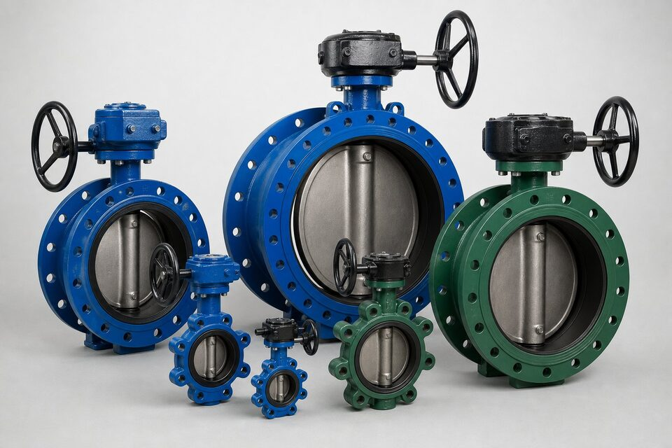

ساختار و عملکرد
شیر پروانهای از یک دیسک گرد تشکیل شده که با چرخش یکچهارمدوره حول ساقه، مسیر را باز یا بسته میکند. نشیمنگاه اطراف دیسک آببندی را ایجاد میکند. سادگی ساختار، وزن کم و سرعت عملکرد، مزایای ذاتی این خانواده هستند.

انواع نصب
| نوع | روش نصب | مزیت |
|---|---|---|
| ویفر | فشرده بین دو فلنج | اقتصادی و جمعوجور |
| لاگ | پیچ عبوری به هر فلنج | دمونتاژ یک سمت خط |
| فلنجی | پیچ مستقیم به فلنجها | اتصال محکمتر در سایزها و کلاسهای خاص |
مزایا و محدودیتها
- مزایا: وزن و قیمت کم در سایزهای بزرگ، سرعت عملکرد، تعمیرپذیری نسبی.
- محدودیتها: افت فشار دیسک، محدودیت کلاس نشتی در طرحهای ساده.
- در سرویسهای ساینده، متریال دیسک و نشیمنگاه اهمیت پیدا میکند.
- برای کنترل دقیق، گزینههای اختصاصیتر مناسبترند.
متریالها
- بدنه چدنی برای تاسیسات و فولادی برای سرویسهای سختتر.
- دیسک استنلس یا با پوشش متناسب با سیال.
- نشیمنگاه نرم برای آب و سرویسهای عمومی.
- نشیمنگاه فلزی برای دمای بالاتر.
چکلیست استعلام
- سایز و کلاس فشاری را ذکر کنید.
- نوع نصب را مشخص کنید.
- متریال دیسک و نشیمنگاه را متناسب با سیال انتخاب کنید.
- نوع عملگر را در صورت اتوماسیون بنویسید.
- مدارک تست و گواهی مواد را درخواست کنید.
محرک و اتوماسیون
شیر پروانهای با گشتاور نسبتاً پایین به راحتی با محرکهای پنوماتیک، الکتریکی یا هیدرولیک اتوماتیک میشود. در محاسبه محرک، گشتاور شیر در بدترین شرایط کاری با حاشیه ایمنی لحاظ میگردد و وضعیت ایمن در قطع انرژی مشخص میشود.
کاربردهای رایج
- شبکههای آب و فاضلاب در سایزهای بزرگ.
- سیستمهای خنککننده و تهویه.
- خطوط فرایندی با فشار متوسط.
- نقاطی که فضا و وزن محدودیت دارند.
عیبیابی سریع
- نشتی بسته: کنترل سلامت نشیمنگاه و ذرات جامد.
- سفتی عملکرد: بررسی محور و بوشها.
- نشتی از محور: پکینگ و آببندی ساقه.
- ارتعاش دیسک: بررسی وضعیت نیمهباز بودن مداوم.
نگهداری و عمر مفید شیر پروانهای
شیرهای پروانهای به استهلاک کم معروفاند؛ اما این شهرت به معنای بینیازی از نگهداری نیست و در سرویسهای سخت، چند نقطه آسیبپذیر مشخص دارند که پایش آنها عمر تجهیز را چند برابر میکند. مهمترین قطعه مصرفی، نشیمن الاستومری است؛ این قطعه هم آببندی را میسازد و هم در هر سیکل با دیسک در تماس است. عواملی که عمر نشیمن را کوتاه میکنند شامل سایش ذرات معلق در سیال، دمای نزدیک به حد مجاز الاستومر، مواد شیمیایی ناسازگار و سیکلهای زیادند. نشتی در حالت بسته، اولین علامت فرسایش نشیمن است و تعویض بهموقع آن، بسیار ارزانتر از ادامه کار با نشتی است که میتواند به دیسک نیز آسیب بزند. در انتخاب نشیمن جایگزین، جنس متناسب سیال و دمای واقعی را مبنا قرار دهید، نه صرفا مشابهت ظاهری با نشیمن قبلی. دوم، یاتاقانها و نقاط تکیه دیسکاند؛ لقی یا سفتی حرکت دیسک، معمولا از این نواحی ناشی میشود و در شیرهای بزرگ، بازرسی دورهای آنها اهمیت دارد. سوم، ساقه و آببندی آن است؛ نشتی از ناحیه گلند یا ساقه باید به موقع رفع شود، چون در شیرهایی که ساقه از بدنه خارج میشود، این نشتی هم اتلاف سیال و هم ورود آلودگی را در پی دارد. چهارم، وضعیت عملگر است؛ در محرکهای پنوماتیکی، سلامت دیافراگم و تمیزی هوای تغذیه، و در محرکهای دستی، وضعیت گیربکس و روانی حرکت باید دورهای کنترل شود. در شیرهایی که دورههای طولانی بیحرکت میمانند، چرخش دورهای از گیر کردن دیسک جلوگیری میکند، به ویژه در سرویسهای رسوبساز. پنجم، پایش بدنه در نقاط فرسایش است؛ در خطوط با سرعت بالا یا سیال ساینده، ناحیه پاییندست دیسک میتواند دچار فرسایش موضعی شود و پایش ضخامت بدنه در این نقاط، عمر باقیمانده را قابل پیشبینی میکند. در نهایت، نتایج هر بازرسی را در پرونده تجهیز ثبت کنید تا روند فرسایش در طول زمان قابل ارزیابی باشد و تعویضها در زمان مناسب برنامهریزی شوند.
جمعبندی
شیر پروانهای انتخاب هوشمند خطوط بزرگ است؛ با انتخاب درست نوع نصب، متریال و نشیمنگاه، سالها خدمت مطمئن ارائه میدهد.
سوالات رایج
چرا پروانهای در خطوط بزرگ رایج است؟
چون در مقایسه با شیرهای همسایز، بسیار جمعوجورتر و سبکتر و اقتصادیتر است و با یکچهارم دور به سرعت باز و بسته میشود. این مزایا در سایزهای بزرگ برجستهتر میشوند.
محدودیت اصلی آن چیست؟
حضور دیسک در مسیر جریان حتی در حالت باز، افت فشار ایجاد میکند و آببندی آن در فشارهای خیلی بالا محدودتر از برخی شیرهای دیگر است. برای سرویسهای خاص باید طرح مناسب انتخاب شود.
تفاوت نصب ویفر و لاگ چیست؟
ویفر بین دو فلنج فشرده میشود و برای دمونتاژ باید هر دو سمت باز شود؛ لاگ با پیچهای عبوری به هر فلنج جداگانه بسته میشود و امکان بستن یک سمت خط را میدهد.
برای تنظیم دبی مناسب است؟
در محدودهای از باز شدن میتواند دبی را کنترل کند، اما برای کنترل دقیق، شیرهای کنترلی مناسبترند. نقش اصلی آن قطع و وصل سریع است.
مطالب مرتبط
- استاندارد شیر پروانهای (API 609) و آفستها
- مقایسه شیر توپی و دروازهای
- راهنمای انتخاب شیر بر اساس سیال
- راهنمای انتخاب محرک شیرآلات
- راهنمای گشتاور و سایزینگ محرک شیر پروانهای
با ذکر سایز، کلاس، نوع نصب و نشیمنگاه، شیر پروانهای مناسب به همراه مدارک کامل عرضه میشود.
مشاهده صفحه محصول ثبت RFQ همین محصولتامین این تجهیزات را به پیشرو تجهیز فرتاک بسپارید
شرکت پیشرو تجهیز فرتاک تامینکننده تخصصی تجهیزات صنعتی برای پروژههای نفت، گاز، پتروشیمی، فولاد و نیروگاهی است. برای دریافت پیشنهاد فنی و قیمت، استعلام (RFQ) خود را ثبت کنید تا کارشناسان مهندسی فروش در کوتاهترین زمان پاسخ دهند.
- تامین شیرآلات صنعتیخانواده کامل شیر با گواهی مواد
- تامین تجهیزات پایپینگاتصالات هماهنگ با شیر